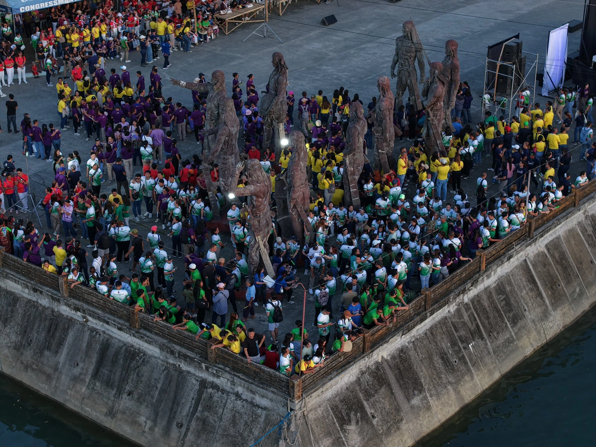
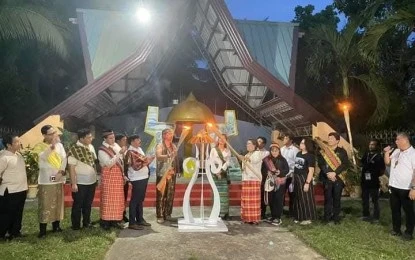

The Heart of Antiqueño Heritage
The Binirayan Festival is Antique's major cultural celebration, honoring the province's heritage, identity, and shared memory. Its name comes from the Kinaray-a word "biray," meaning sailboat, and is often understood as "where they sailed to."
It commemorates the legendary arrival of the ten Bornean Datus to Panay, a story remembered through reenactments, ceremonies, performances, and province-wide participation.
Why it matters today
Binirayan continues to matter because it strengthens local identity, brings communities together, and presents Antique's culture to visitors with pride and meaning.

Quick Facts
- Founded: 1974
- Founder: Gov. Evelio B. Javier
- Location: Province of Antique, Philippines
- Heritage Site: Malandog, Hamtic
- Season: December

Culture in Motion
Music, movement, ritual, and community pride shape the atmosphere of Binirayan.

Where History Becomes a Living Celebration
Binirayan is experienced through torch-lighting, public ceremonies, cultural performances, and the vibrant gathering of Antique's communities.
The celebration transforms historical memory into a shared experience that welcomes both locals and visitors into the spirit and pride of Antique.
Festival Highlights
Historical Reenactment
A vivid restaging of the legendary Datus' arrival on the historic shores of Malandog, Hamtic.
Torch-Lighting
A solemn evening ceremony symbolizing endurance, resilience, hope, and the spirit of the Antiqueños.
Cultural Performances
Street dancing, heritage presentations, and local artistry that animate the festival experience.
Municipal Participation
Antique's municipalities unite to showcase local heritage, folklore, creativity, and civic pride.
Exhibits & Showcases
Trade fairs and local showcases presenting crafts, products, textiles, and community talent.
Community Celebration
More than a festival, Binirayan becomes a shared gathering of memory, belonging, and provincial identity.
Heritage
Preserving Kinaray-a traditions, folklore, memory, and language.
Unity
Bringing communities together in a shared celebration of Antique's identity.
Tourism
Welcoming visitors to experience Antique's culture, hospitality, and traditions.
Discover More of Binirayan
Explore the deeper history, browse festival moments, and view the activities that bring the celebration to life.